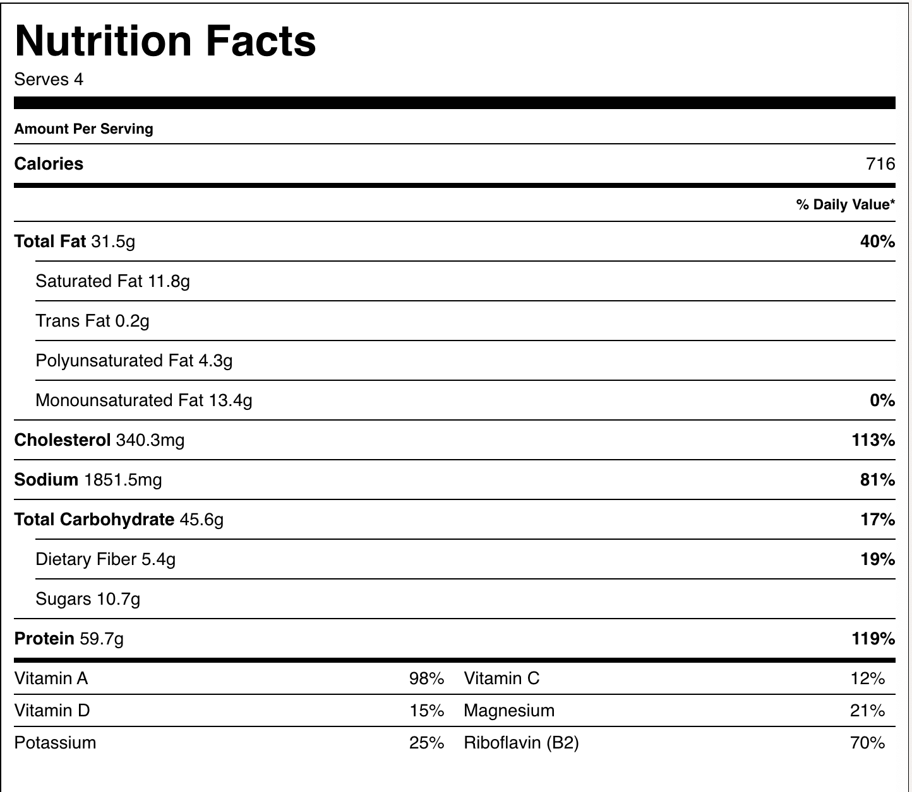

Burger Recipe
Home
Description
Juicy Homemade Beef Burgers
INGREDIENTS
- 500 g (1 lb 2 oz) regular minced (ground) beef
- ½ cup (30 g) panko breadcrumbs
- 1 egg
- 1 tbsp Worcestershire sauce
- 1 tbsp ketchup
- 1 tsp salt
- ½ tsp cracked black pepper
- 2 tbsp olive oil
- 1-2 tbsp water(optional)
TO SERVE
- 4 brioche rolls, halved and toasted
- 4 slices gouda cheese or burger cheese slices (see note 1)
- 2 tomatoes, finely sliced
- 1 red onion, finely sliced
- 1 little gem lettuce, leaves picked and washed
- 2 tbsp sliced gherkins (dill pickles)
- 4 teaspoons whole-egg mayonnaise
- 4 teaspoons ketchup
- 4 teaspoons American mustard
INSTRUCTIONS
- To a large bowl, add the beef mince, breadcrumbs, egg, Worcestershire sauce, ketchup, salt and pepper. Use your hands to combine well. Divide the mixture into 4–6 portions, then use your hands to form patties. Their size ideally needs to be just bigger than the burger buns you are using as the patties will shrink slightly as they cook. Want an extra veggie hit? See note 2.
- Use your thumb to make an indent in one side of the patty. This helps the patties keep their shape during cooking.
- Heat the olive oil in a heavy-based frying pan over medium–high heat. Cook the burger patties for 10–12 minutes, turning once halfway through. Add the water to the pan in the last 2 minutes of cooking. This step is optional, it allows you to scrape up all of the delicious sticky bits in the base of the pan and they cling to the outside of the patties = more flavour! For a delicious chargrilled result, you can cook the patties in a chargrill pan or cook them on a barbecue plate. Heat the plate to medium–high, spray the plate with oil just before cooking and cook the patties for 10–12 minutes, turning once halfway.
- Serve the brioche buns topped with burger patties, cheese, tomato, red onion, gherkins, lettuce, whole-egg mayonnaise, ketchup and American mustard. Serve immediately!
NOTES
- Note 1 - Regular orange burger cheese slices are actually ideal to use as they melt easily and have a smooth, velvety texture. I do like using gouda, though, as it has such a punchy flavour.
- Note 2 - I regularly make these beef patties with the addition of finely shredded carrots and zucchini (courgette). These vegetables melt into the patty and provide it with extra flavour! Use a fine grater to grate up to 1 cup of vegetables to add to your mix.
MAKE AHEAD:
Make the burger patties ahead of time by preparing them as per the recipe. Refrigerate the uncooked burger patties for up to 3 days or freeze for up to 3 months. Store in an airtight container or reusable sandwich bag. Use baking paper between the layers of burger patties to stop them sticking together. Thaw completely overnight in the fridge and cook as per the recipe.
LEFTOVERS:
Refrigerate leftover, cooked burger patties for up to 3 days. Freeze for up to 2 months. Thaw completely overnight before reheating. Reheat in the microwave to retain moisture and produce the best results. Prepare the toppings fresh.
